ChipboxTUTORIAL
The most famous drum break there is, in four bars.
0The whole thing
Four bars, and bars 1 and 2 are the same. The numbers are the 16 steps of a bar:
1 2 3 4 5 6 7 8 9 0 1 2 3 4 5 6
bars 1+2 CH x . x . x . x . x . x . x . x .
SD . . . . x . . x . x . . x . . x
BD x . x . . . . . . . x x . . . .
bar 3 CH x . x . x . x . x . x . x . x .
SD . . . . x . . x . x . . . . x .
BD x . x . . . . . . . x . . . . .
bar 4 CH x . x . x . x . x . . . x . x .
CR . . . . . . . . . . x . . . . .
SD . x . . x . . x . x . . . . x .
BD . . x x . . . . . . x . . . . .1A new project
Hold
HOME to open the project list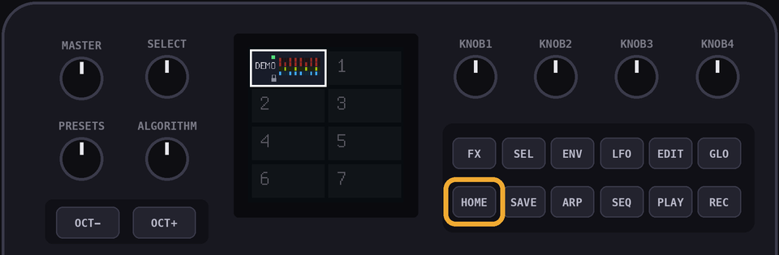
Turn
SELECT to an empty one and hit OCT+ to open it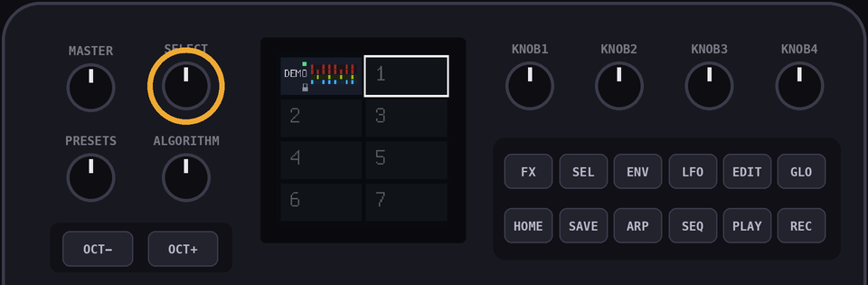
Set
KNOB 1 to 137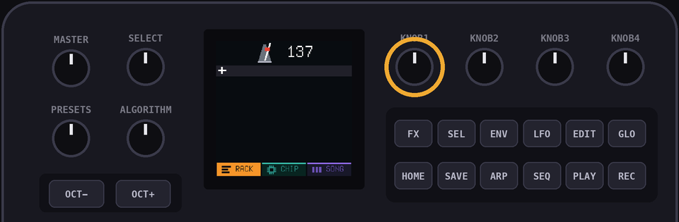
2Add the drums
Hit OCT+ on the
+ row and pick a console. Every console has its own drum kit
Hit
OCT+ again and pick Drums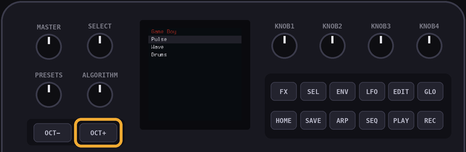
Hit
SEQ to see the drum lanes
3The hi-hats
Use the black keys to pick the drum. The white keys align to the 16 steps. Press the 8th black key for CH, the hi-hat
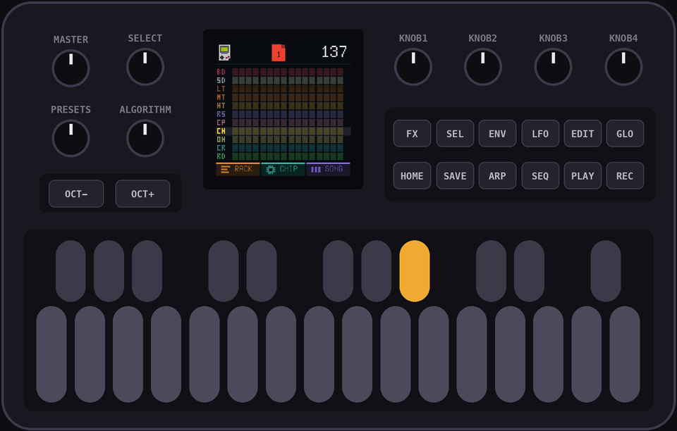
Press white keys 1, 3, 5, 7, 9, 11, 13 and 15

PROTIP: Press a hit again to take it away. Hit
PLAY first if you want to hear it as you build it4The snare
Press the 2nd black key for SD, then white keys 5, 8, 10, 13 and 16
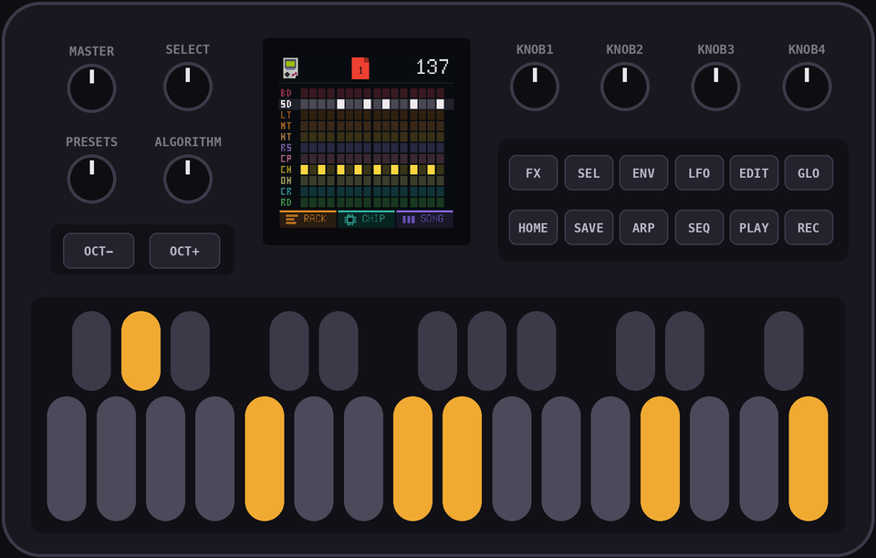
PROTIP: Hold
ENV while you press 5 and 13 to accent them5The kick
Press the 1st black key for BD, then white keys 1, 3, 11 and 12
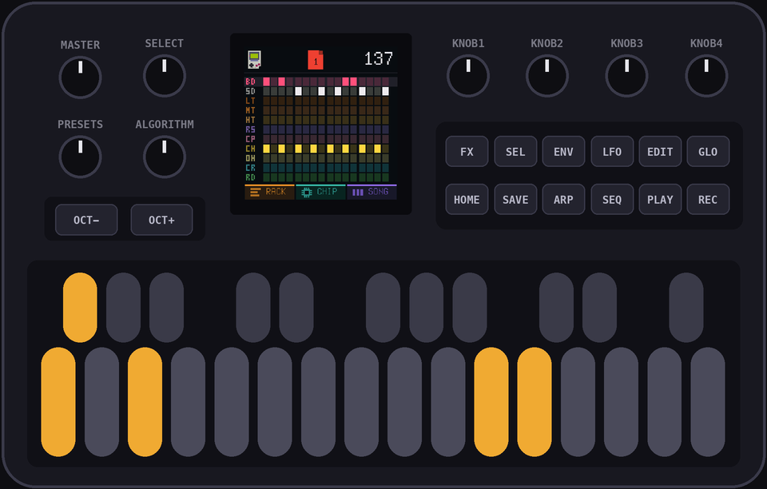
Hit
PLAY to hear bar 1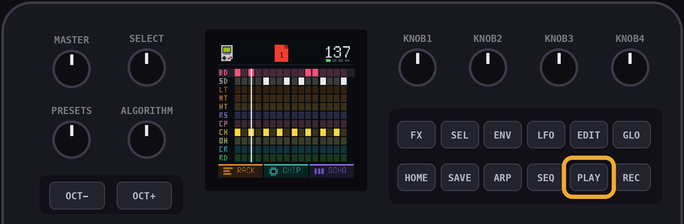
6Bar 2
Bar 2 is the same, so play page 1 twice. Hit
HOME until you're in the SONG view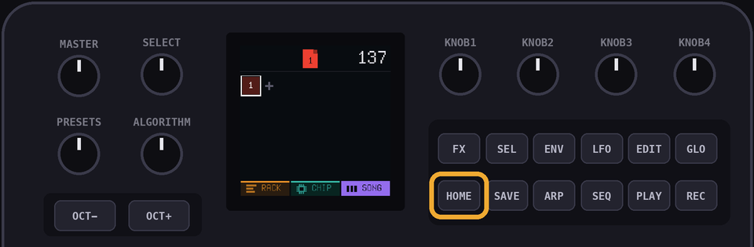
Hit
OCT+ for a new slot, then turn PRESETS until it says 1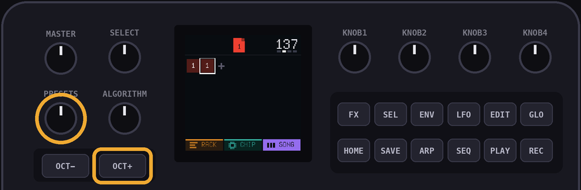
7Bar 3
Bar 3 is almost the same. Hit
OCT+ for another slot and turn PRESETS to 1. Now hold EDIT to give it its own copy. The number changes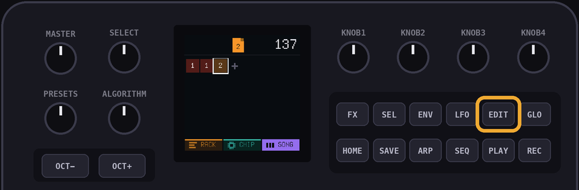
Tap
EDIT to open the copy in the RACK view, then hit SEQThe snare changes: press the 2nd black key, then white keys 13 and 16 to take them away, and 15 to add it
The kick on 12 goes: press the 1st black key and white key 12
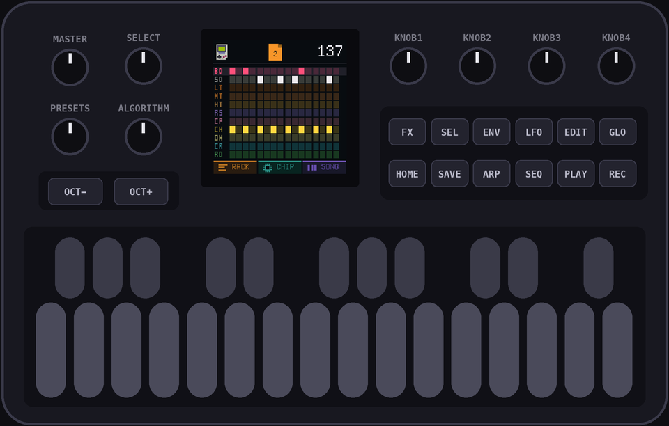
8Bar 4
Same trick.
HOME to the SONG view, OCT+, turn PRESETS to the page you just made (it says 2), hold EDIT, tap EDIT, hit SEQHi-hat: 2nd to last hit goes. Black key 8, white key 11 to take it away
Snare: add a hit on 2. Black key 2, white key 2
Kick: black key 1. Take away 1, add 4
Last one, the crash. Press the 10th black key, then white key 11
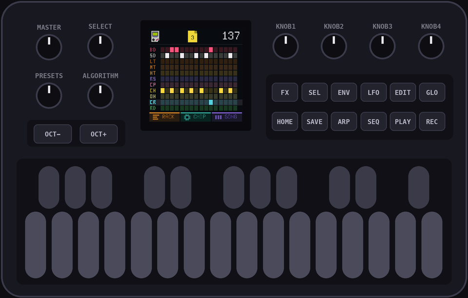
9All four
HOME back to the SONG view, turn SELECT to slot 1 and hit PLAY.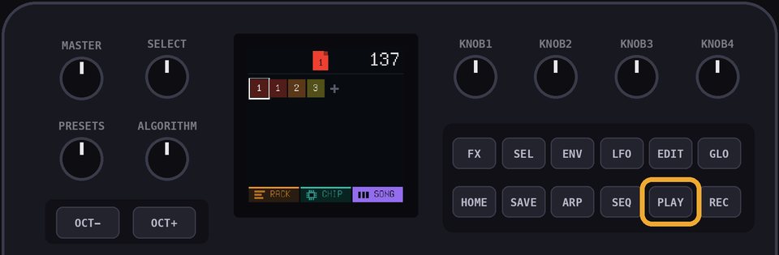
PROTIP: Want to hear one bar on its own? Go to the RACK view, pick the page with
ALGORITHM and hold PLAYDelete the drums, add them again under a different console, and play it again. Same break, a whole new machine